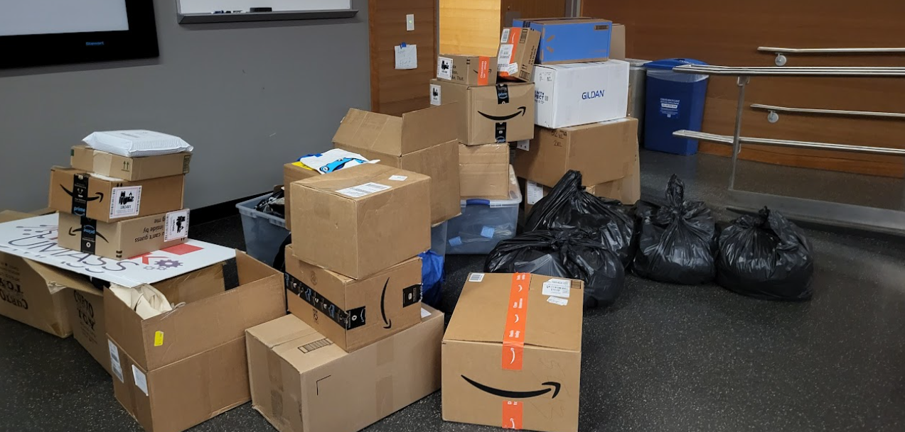
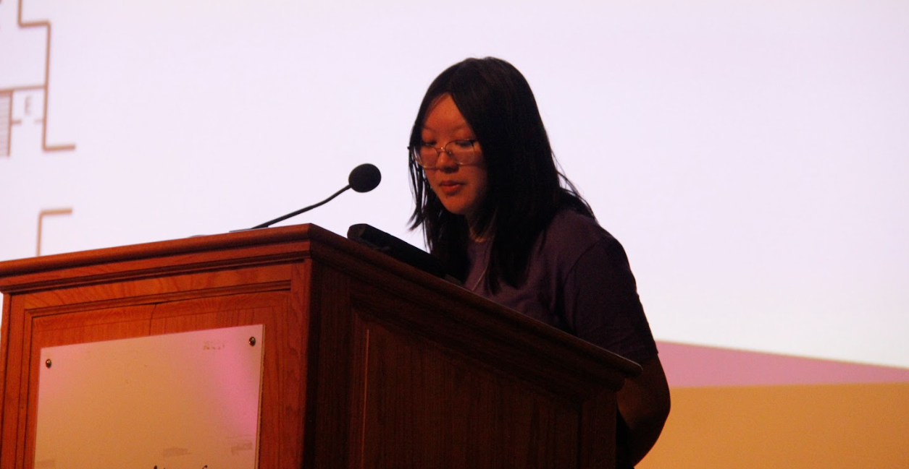
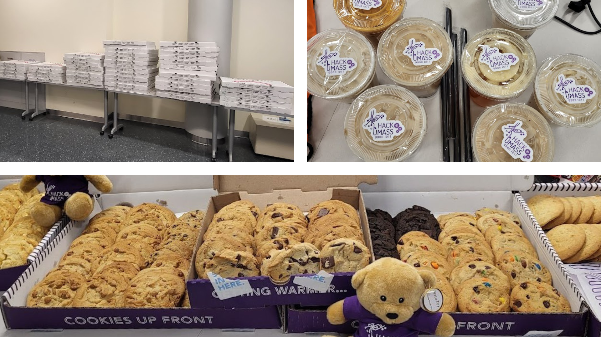

HackUMass XI: (Co-)Director's Cut
HackUMass XI took place over the weekend of November 10-12, 2023, and it was a great success! This blog post will delve into my thoughts and experiences from the event.
For those who do not know, hackathons are weekend-long collaborative sprints where small teams compete against each other to build projects about security, computer hardware, web applications, and more for all kinds of prizes.
HackUMass is an annual student-run 36-hour hackathon that takes place on the UMass Amherst campus where students can build any software and hardware project! We provide a lot of hardware components for projects throughout the event. No prior experience is required to participate in a project. Even if participants choose not to work on a project, they are welcome to attend workshops and talks taking place throughout the entire weekend. Participants also receive free swag throughout the weekend and learn new skills through the aforementioned workshops and talks as well as mentors who stay the entire event!
HackUMass started in 2013 as an embedded systems hackathon with just 100 participants. Now, we're one of the largest hackathons in the Pioneer Valley! Last year, for HackUMass X, we had over 500 participants, 60 amazing software and hardware projects, and $5000 worth of prizes. This year was the eleventh annual HackUMass, where we had 600+ participants create over 80 software and hardware projects and over $9000 worth of prizes!
The preparation for this year's event started back in April. All five teams (PR/Design, Logistics, Hardware, Technology, and Sponsorship) have super hard workers who started the preparation phase super early on. You'd be surprised how much there is to do for just a three-day event! You have to account for marketing the event months in advance to garner an audience, all technological issues regarding participant registration and judging, sponsor coordination, hardware organization, and how to coordinate permits, food, and borrowing equipment! We had to meet every week during the semester to discuss progress and update each other on our current tasks.
The big heavy lifting (I mean this in a literal sense) began in early November. Vivienne and I, the two co-directors of HackUMass XI, had to utilize our own dorm space as HackUMass storage up until the event. She had hundreds of teddy bears in her room (five of us dressed them one-by-one) while I had three huge boxes of air mattresses in mine! We also started receiving all the other stuff we had ordered (snacks, merch, etc.) and storing those away too.

(Right) HackUMass XI limited edition teddy bears!
Friday (November 10) is when we started really setting up. Vivienne and I both woke up early to transport a bunch of miscellaneous items, like merchandise, snacks, and air mattresses all to the ILC in the morning via golf cart! Participant check-in and opening ceremony were both Friday evening. Both of us caught some random mystery cough sometime in the weeks leading up to the event, so we bought cough drops from the UMass Store in an effort to not cough our lungs out while speaking at a podium to hundreds of people.
Opening ceremony went well without any cases of coughed-up lungs! All participants went on their pilgrimage from the Campus Center (where the opening ceremony happened) to the ILC (where everything else is) and started taking some snacks, settling into random hacking rooms, or attending the one workshop (project ideation & team formation led by innov8) that was happening that night. I attended the workshop to just make sure things were smooth sailing, and that is when we started this new idea that came up during our organizer meetings: raffling off HackUMass XI-branded limited edition teddy bears! People loved the bears so much the entire weekend.
Saturday (November 11) also went super smoothly! We had a bunch of workshops and talks where people were joyfully receiving their bears. Most of my time was spent checking in on various workshops/talks that were happening and helping out with teddy bear raffles. My fellow e-board members in the Cybersec Club were hosting a talk on Xbox Hacking at 3 PM which was super entertaining! If you aren't already involved with the Cybersec Club, you should stop by our meetings to learn something new!
We had pizza for dinner at 5 PM, Meenu got us all boba from Vivi's at 6 PM, and then we paraded around huge boxes of Insomnia Cookies at 11 PM for participants in the hacking rooms!
(Top right) Thanks Meenu for the boba :)
(Bottom) The bears enjoyed the cookies, too!
Sunday (November 12) was Judgment Day, the day when all projects were judged. It was a bit hectic with the huge influx of questions regarding judging, but we were able to handle it. Seeing all the projects on display was an insanely cool experience and made all of the months of planning and sleepless nights all worth it. We also had breakfast catering from UMass Dining. I think I ate around four cinnamon rolls...
Closing ceremony went amazingly. We had an amazing montage to play at the beginning (credit to Monil) before announcing all the winners which was incredibly impressive considering it needed to be made in such a short time span. The room was full of cheering and applause the whole time, and it was super satisfying seeing the smiles on people's faces as we called their names to the front to get their prizes. Despite the lengthy ceremony, we managed to clean up the entire ILC by 6 PM!
Overall, the weekend was full of optimism, laughs, and new experiences. I never imagined I would have the chance to explore the secret underground tunnels of UMass, add my professor on Discord, witness a wheelie-chair race in the ILC, see people fight over teddy bears, or play Compilation PlayGame Subway Surfers On PC Non Stop 1 Hour HD to (unironically) help me make slides — all in one weekend. Compared to last year it was a huge improvement. I only consumed three cans of Monster (as opposed to three each day) the entire weekend and got relatively good sleep (as opposed to the three hours total I had last year).
All the participants this year were great and created such an amazing and fun atmosphere the whole long weekend. I am also so endlessly proud of everyone who was on the organizing team this year!!! HackUMass XI would be nothing if not for the hardworking individuals who shone bright through the past year. This year went insanely smoothly and it is all thanks to everyone who was so proactive and high-spirited throughout the three days. Thanks to thoughtful planning and great teamwork, HackUMass XI was a major success. I'll be sure to come back next year even after I graduate to see how the legacy carries on :)

See more pictures from the event here. If you want to join the organizing team, applications open typically in the Spring semester!